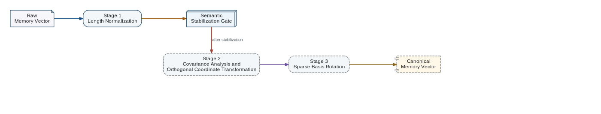

Memory Vector canonicalization should be introduced as a sequence of increasingly demanding normalization stages. The stages must not be collapsed into one operation because each depends on evidence that becomes available only after the previous stage and the Memory State have stabilized.

Stage 1 — Length Normalization
At the initial integration stage, every non-zero raw Memory Vector is normalized by its Euclidean length before it is delivered to the Transformer. The vector direction carries the activated semantic pattern, while the original length is retained separately as activation magnitude. A zero raw vector maps to the canonical null Memory Vector and is never divided by zero.
Stage 2 — Statistical Orthogonalization
After Associative Memory has stabilized enough that semantically equivalent inputs generate nearby Memory Vectors, a representative sample of vectors is collected. Its covariance or correlation matrix is estimated. A whitening or related coordinate transformation is then learned so that off-diagonal covariance becomes negligible and redundant coordinate coupling is reduced.
Stage 3 — Sparse Basis Rotation
Once an approximately orthogonal coordinate system has been obtained, an additional rotation may be optimized to minimize the number of non-zero or materially active coordinates for simple input assertions. The objective is a sparse canonical representation in which each axis corresponds as closely as practical to one independent semantic property.